Jamon Iberico con Pan Cristal
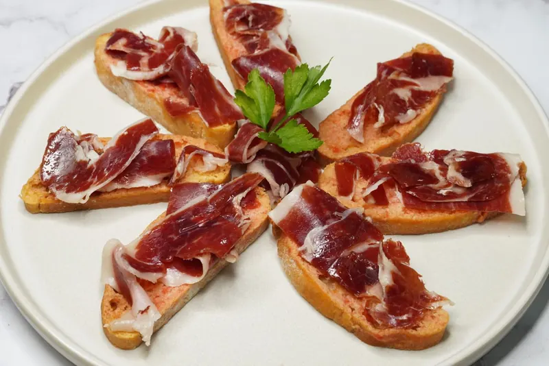
Croquetas Caseras con Jamon
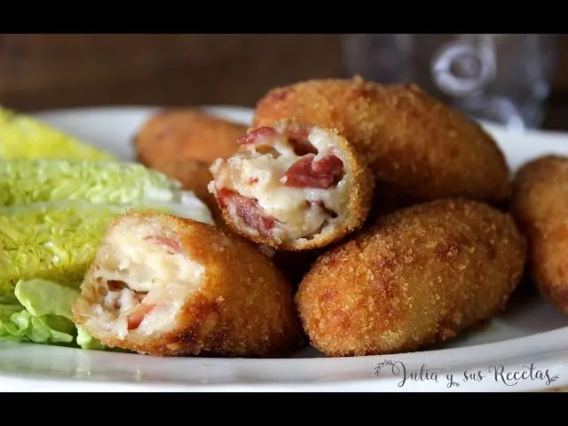
Burrata con tomate confitado y pesto
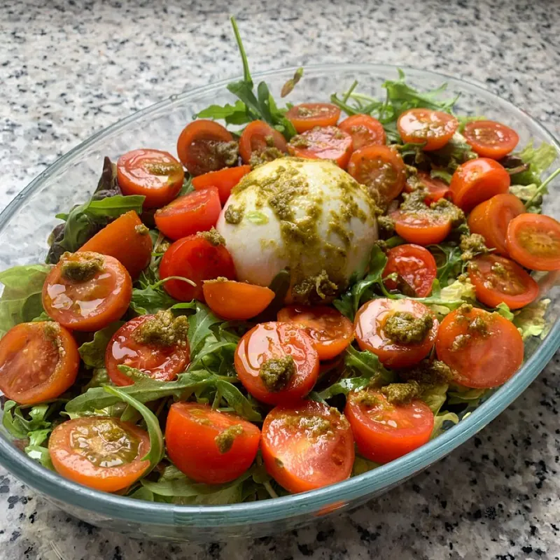
Ensalada de queso de cabra y frutos secos
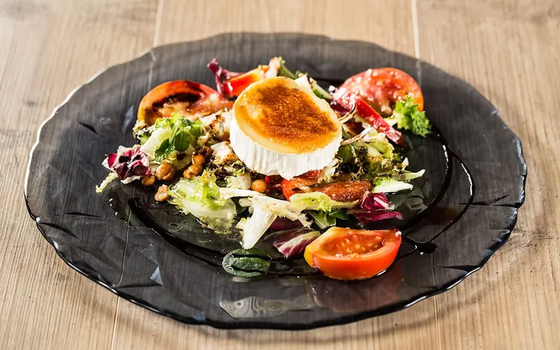
Pulpo a la brasa con parmentier
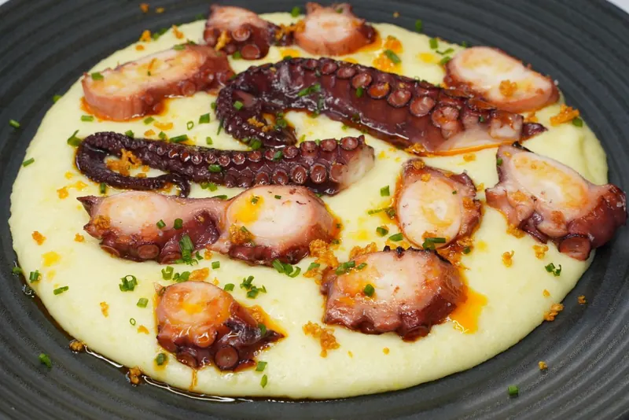
Brocheta (Especialidad de la casa)
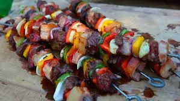
Entrecot de Ternera a la Parrilla
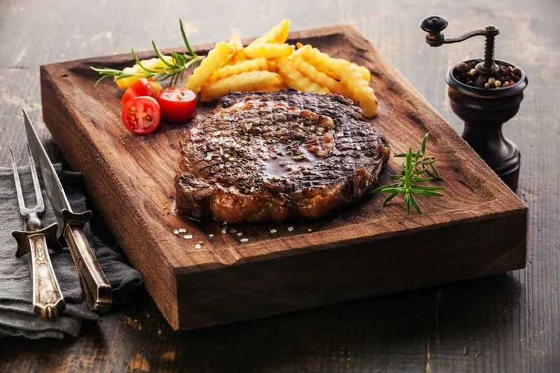
Solomillo Iberico con Salsa de Setas
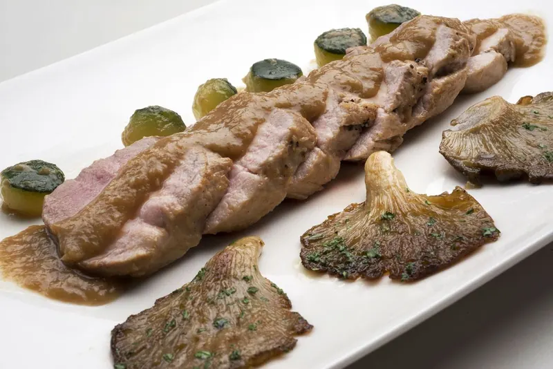
Arroz meloso de marisco
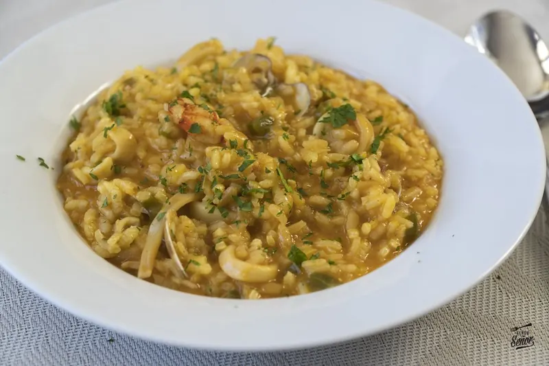
Pasta fresca trufada con parmesano
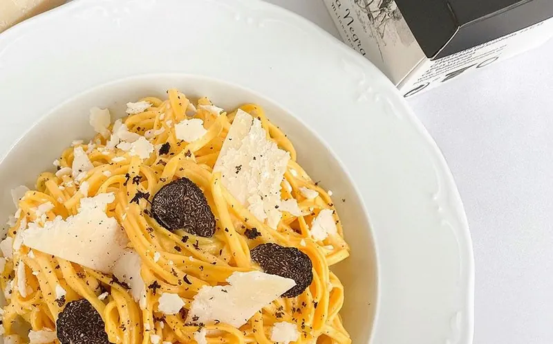
Hamburguesa gourmet con patatas
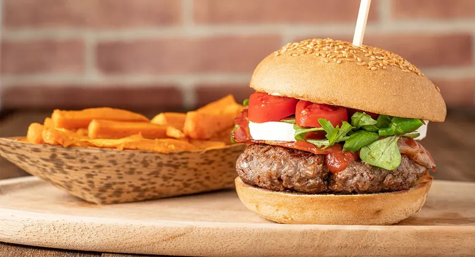
Bacalao confitado con verduras
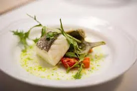
Tarta de queso cremosa
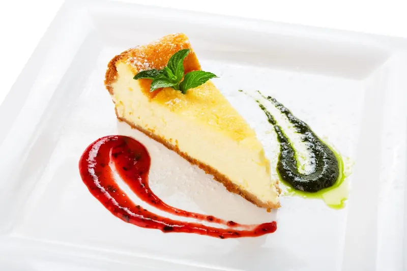
Coulant de chocolate con helado
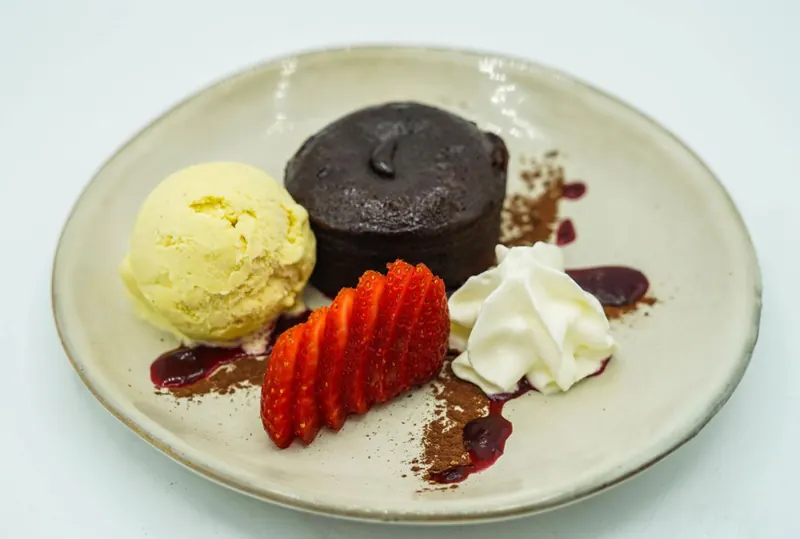
Torrija caramelizada con vainilla
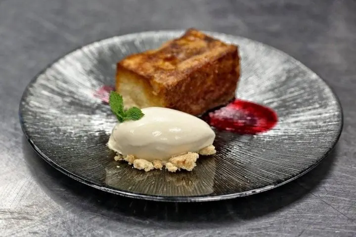